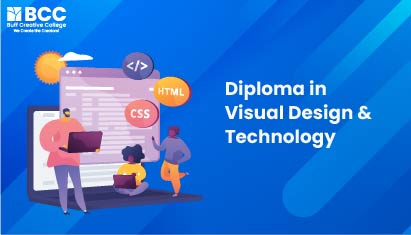
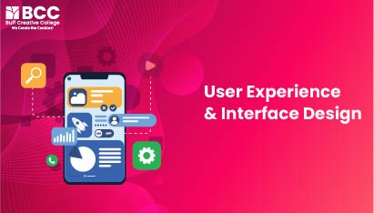
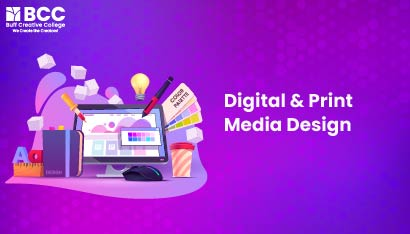

Courses we offer:


Master in Visual Design and Technology
The stream of visual design is growing very fast! A diploma
in visual design and technology is a course of study focused on
developing the knowledge of graphic design that includes
illustration, layering, and image editing etc., It also helps the
students in developing the knowledge of photography, print
advertisements, animations and digital media. The course is intended
for anyone with an interest in visual design. Additionally, it
focuses more on computer skills and understanding the various design
software. The diploma in Visual Design and Technology at Buff
Creative College offers a range of courses and programs designed to
help you build your design career. Our courses cover a wide range of
topics, including web and print design, branding and marketing,
digital media, animation, Packaging Design, illustrations and more.
We also provide practical projects to enhance the student’s
creativity skills. Join our course because the world needs you now
before it’s too late. Our experienced mentors provide hands-on
guidance and support to help you develop the skills and knowledge
you need to succeed in the competitive design industry. We also
guide you to create professional-level projects and develop a
creative portfolio. If you are looking for a place to start your
design career, look no further than Diploma in Visual Design and
Technology course at Buff Creative College. With our comprehensive
curriculum, experienced mentors, and access to industry-standard
tools, we can create you as a successful designer. Our mission for
the Visual Design and technology course is to teach and equip
students with the skills and knowledge they need to become confident
and effective visual designers. We will focus on teaching designing
principles and fundamentals such as colour theory, typography,
composition, layout, and digital media production, as well as
introducing more about branding designs. We will strive to build a
supportive and creative learning environment and to create
meaningful projects that apply the concepts learned in class.
UX UI Design
What you will learn in User Interface Design? In our User Interface
(UI) Design course, you will learn essential skills like UI Design
Principles and fundamental UI design principles, including layout,
visual hierarchy, typography, color theory, and use of imagery.
Familiarize yourself with industry-standard design tools and
software used for UI design, such as Adobe XD, Figma, and Sketch*.
Learn how to design user interfaces that are responsive and adaptive
to different screen sizes and devices. Explore the use of icons,
illustrations, and other visual elements in UI design. Learn how to
create menus, breadcrumbs, tabs, and other navigation elements.
Learn how to create subtle and meaningful animations that provide
feedback, guide user actions, and add a delightful touch to the
interface. Learn how to create interactive prototypes that allow
users to experience and interact with your designs. Also, you will
learn essential skills like UI Design Principles and fundamental UI
design principles, including layout, visual hierarchy, typography,
color theory, and use of imagery. Familiarize yourself with
industry-standard design tools and software used for UI design, such
as Adobe XD, Figma, and Sketch*. Learn how to design user interfaces
that are responsive and adaptive to different screen sizes and
devices. Explore the use of icons, illustrations, and other visual
elements in UI design. Learn how to create menus, breadcrumbs, tabs,
and other navigation elements. Learn how to create subtle and
meaningful animations that provide feedback, guide user actions, and
add a delightful touch to the interface. Learn how to create
interactive prototypes that allow users to experience and interact
with your designs.


Graphic Design
This complete program is designed to provide you with the
essential skills and knowledge needed to succeed in the passionate
field of graphic design. Throughout the course, you will explore the
fascinating world of visual communication. You will master color
theory and typography to understand composition and layout
principles, you'll develop a keen eye for design aesthetics, and
learn how to effectively convey messages through visual elements. a
wide range of design applications, including branding and identity
design, print design, and digital design for web and social media
platforms. Throughout the course, you will explore the features and
functionalities of Photoshop, learning how to harness its power to
enhance, retouch, and transform digital images. Learn from basic
editing techniques to advanced manipulation, you'll learn how to
bring out the best in your photographs and create stunning visual
compositions. Whether you're a beginner looking to explore your
creativity or a professional seeking to enhance your design skills,
this course will empower you to create stunning artwork and designs
using Adobe Illustrator. From creating and manipulating shapes to
working with text and typography, you'll learn how to bring your
creative ideas to life. Also, Whether you're a beginner looking to
explore your creativity or a professional seeking to enhance your
design skills, this course will empower you to create stunning
artwork and designs using Adobe Illustrator. From creating and
manipulating shapes to working with text and typography, you'll
learn how to bring your creative ideas to life. Whether you're a
beginner looking to explore your creativity or a professional
seeking to enhance your design skills, this course will empower you
to create stunning artwork and designs using Adobe Illustrator. From
creating and manipulating shapes to working with text and
typography, you'll learn how to bring your creative ideas to life.
Certification in UI Development
Our Front-End UI Development certification course is designed
to equip you with the essential skills and knowledge needed to excel
in web development. Throughout the course, you will learn the
fundamental principles of web design and front-end development,
gaining proficiency in HTML, CSS, and JavaScript—the core building
blocks of modern web development. You'll also explore popular
front-end frameworks and libraries, such as Bootstrap and React, to
enhance your development capabilities. You'll learn responsive
design principles, and accessibility considerations, ensuring your
websites are inclusive and user-friendly. An HTML and CSS course
covers the fundamentals of web development. In HTML, you learn how
to structure web pages, create links, forms, tables, and incorporate
multimedia elements. CSS teaches you to style and format web pages,
work with colors, typography, layouts, and responsive design. You
gain skills in selecting elements, applying styles, and
understanding the box model. Additionally, you learn about
responsive design principles, media queries, and optimizing web
performance. In a JavaScript and Bootstrap course, you will learn
the fundamentals of JavaScript programming and the Bootstrap
framework for web development. With JavaScript, you acquire skills
in manipulating web page elements, handling events, creating dynamic
behavior, and integrating APIs. Bootstrap empowers you to build
responsive and visually appealing web interfaces by utilizing its
grid system, pre-built components, and responsive utilities. You
customize styles, implement form validation, and leverage JavaScript
plugins. A UI Front-End Web Development course covers a range of
skills and tools necessary to create visually appealing and
interactive user interfaces for websites and web applications. You
will learn HTML, the structure of web pages; CSS, the styling and
layout of web elements; and JavaScript, to add interactivity and
dynamic behavior. Responsive design principles will enable you to
create interfaces that adapt to different devices and screen sizes.
You will explore UI/UX design principles for user-friendly
interfaces. Additionally, you'll learn about front-end frameworks
like React, Angular, or Vue.js, and leverage libraries for
animations and effects.


Advanced Design and Technology
Our exclusive Advanced Design and Technology certification
course contains a wide range of modules such as Fine Arts, Graphic
Design, and UX UI Design. This unique course is tailor-made for
aspiring designers who aspire to embark on successful employment in
the passionate design industry. The best part is that it caters to
individuals of all educational backgrounds and levels of experience.
From beginners to experts, this course equips you with the necessary
skills and knowledge in the multimedia industry. Fine Arts are at
the heart of everything a creator creates. In your Fine Arts Course
module, you will learn the fundamentals of art related to the
business of design. Designed exclusively for beginners, our Fine
Arts course is designed to teach beginners the basics of sketching
and painting. As part of our curriculum, we teach students how to
work with pencil shades as well as sketch the landscape and
characters. Using FineArts for Graphic Design and UXUI Design
follows the completion of the foundation of art. Your Graphic Design
and UXUI Design projects will require you to sketch a logo, layout,
storyboard, and wireframe.The graphic design contains a range of
skills and knowledge. It involves learning design principles,
software proficiency (such as Adobe Photoshop and Illustrator),
branding, layout and composition, typography, color theory, digital
and print design, image editing, visual communication,
problem-solving, and creativity. Graphic designers create visually
appealing and effective designs for various mediums, using elements
like logos, typography, colors, and images. Endless learning and
professionalism in areas like web design or illustration are vital
in this growing field. In UX/UI design, you will learn a range of
skills and concepts to create user-friendly digital experiences.
This contains user research to understand user needs, behaviors, and
preferences. You'll develop information architecture skills to
manage content effectively and create wireframes and prototypes to
test and refine designs. Understanding visual design principles and
interaction design will drive your creation of aesthetically
engaging and intuitive interfaces. You'll also learn about
usability, accessibility, and conducting user testing for feedback.
Collaboration, an iterative design process, and proficiency in
design tools and technologies are essential. Staying updated with
industry best practices ensures you can create modern and effective
designs in this ever-evolving field.
UX UI Design and Developement
You are passionate about UI UX design, but don’t know where to start
or how to do it. We will show you the way.UXUI design and
development course is a course of study for people even with
absolutely no design experience and also for experienced designers
who want to get up to speed quickly with mobile app design. The
course helps you to learn the art of making beautiful apps. We will
help students explore key UXUI concepts and applications; front-end
development that is essential to building good-looking and
easy-to-use apps that are loved by users. Your development process
can be streamlined by integrating UI/UX design to highlight and
address most of the usability challenges that you may face during
and after the development process. The UI/UX designer will be able
to anticipate the users’ needs before going into production,
resulting in a flexible and scalable design that can grow with users
in the future. You will save time, money, and resources by adopting
a user-centered design approach to UI/UX. The Design and Development
course at Buff Creative College is designed for students interested
in learning UX/UI design and development. The course includes topics
such as user interface design, user experience design, user
research, prototyping, coding, and more. The course is taught by
experienced mentors, who will clarify all your doubts without any
hesitation. The course is also supplemented with hands-on projects
that allow students to practice their skills in a real-world
environment. The course will cover the fundamentals of user
experience design, from the basics of user interface design to the
principles of user-centred design. You will learn how to create
wireframes, create prototypes, and learn how to conduct user
research and usability testing. Additionally, you will learn how to
apply design thinking to create effective user interfaces. Students
who complete the course will be able to create effective and
engaging user experiences for any platform. Our mission for the
UX/UI Design Development Course is to equip our students with the
knowledge, skills, and experience needed to become successful UX/UI
designers. We will cover topics such as visual design, user
experience design, wireframing, product design, user interface
design, and prototyping. We will also provide perfect mentorship and
clear any doubts of the students and also give feedback to help our
students learn and apply the principles of UX/UI design. By the end
of the course, our students will be able to confidently create and
implement effective UX/UI designs that meet the needs of the user
and the business.